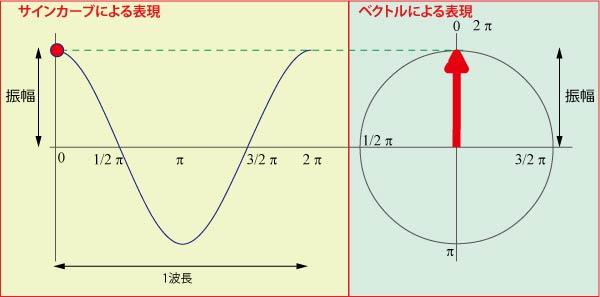
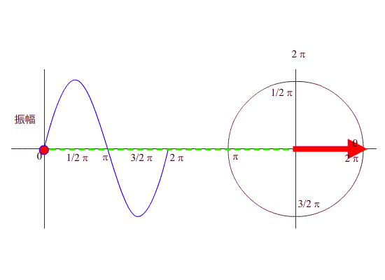

さて，このページからは位相差顕微鏡を紹介しましょう．
このページの説明は，以下の本を参考にしました．
生物顕微鏡の基礎 / 八鹿寛二著. -- 培風館, 1973.
残念ながらもう絶版ですが，よい本です．
ほかにも，位相差顕微鏡についてはいろいろなサイトで説明がありますので，参考にしてみてください．
Wikipedia
光学顕微鏡・位相差顕微鏡の使い方ガイド
顕微鏡観察の方法
ニコン
まずは，光の表現から．
光は波の性質があるので，サイン波（下の図の左）で表すことができます．
これと同時にベクトル表現（下の図の右）もできます．

つまり，ベクトル表現において，
円の半径 ： 振幅
1回転する速さ ： 周波数
矢印の角度 ： 位相
となります．
ですので，下の図に示すように，サイン波の時間経過は，ベクトルで矢印がぐるぐる回ることと同等となります．
